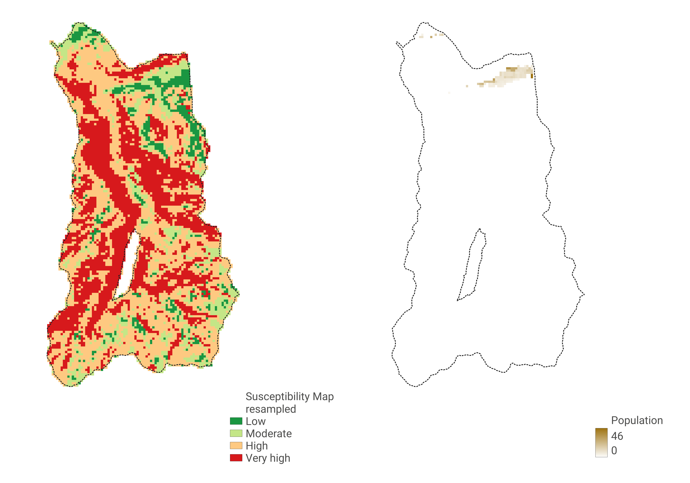

Methodology
In this section will be presented the workflow and methodology applied in order to obtain the Landslide Susceptibility Maps and the Exposure Assessment.
General workflow
1. Data preprocessing for susceptibility mapping
Basic data
All this data was directly obtained and only clipped to the area of analysis.
Computed data
All this data was processed from the DTM layer through GRASS and QGIS.

Setting the training and testing points
In order to make the algorithm run properly, the layers already presented are not enough. We need to create a set of points through which we define an hazard level with a precise value. To do so, two new datasets are used.
-
The first one is directly downloaded from ISPRA: it is the "IFFI landslide inventory" and represents the landslides already occured in the past, between rapid flowing and rotational/translational sliding.
-
The second one is derived from the slope layer already processed. We will assume that all the soil unde 20° and over 70° of slope is very unlikely to generate landslides. The first is it not enough inclined, while the latter usually hosts compositions of too hard rocks.
At this point we define by convention the "no landslide zones" as areas without hazard (value=0) and the areas previously affected by landslides whith the maximum hazard (value=1).
Thank to this assumption we are able to create the points layers. In particular there is the need to create two sets of points, one to train the model and the other one to test its result.
In order to obtain the layer from which create points, we must delete the interesecting polygons between the NLZ layer and the landslide inventory one. These intersections are possible because we assumed an arbitrary and quite simple method to evaluate the hazard level of 0 and 1.
Once the united later is ready, the points layer can be created. A random selection can be operated to mark the areas through a 30/70 ratio. In this way, 30% will be devoted to create testing points and 70% to create training points. A random point creator is used to generate the points layer, in which we will maintain a 1:1 ratio between 0 Hazard and 1 Hazard points.
The final operation is to join the information of the Basic and Computed Data raster layers to the point layers. A sampling operation is carried on, so that each point get the information of every layer on which it spatially falls. The following screen of the layer attribute table shows the final result.
2. Susceptibility map generation
The second step is to create the Susceptibility map through the R Model Map script in QGIS environment. In order to perform the computation, the script needs all the raster layers that were preprocessed in Step 1 and the layer of training points sampled with the layers information, basically everything that was showed in the previous section.
The first outcome of the script is a raster layer with continue values between 0 and 1, representing respectively the lowest and highest level of Susceptibility. In order to rapresent it in a more consistent form, the layer is reclassified to a 0 to 4 discrete classification. The jumps between one class and another are at 0.25, 0.5 and 0.75.

3. Data preprocessing for exposure assessment
In this phase the goal is to assess the exposure of the real world elements to landslide susceptibility just calculated. In particular this assessment is carried on with the population data. The idea is to understand how many people lives in areas with high or low level of landslide susceptibility. Since the vectorial ISTAT data is too old (2011) and also cutted with discreete geometries, a raster dataset is used instead, with reference at 2020. In this way is possible to calculate the population raster data in relation to the susceptibility map raster and get the overall statistics for the 4 classes.
Before doing so, we need to manipulate the population layer in order to prepare it for the calculation. In particular, we need to clip it to the area of analysis and then to resample it, as to say, make its resolution the most similar possible to the susceptibility map raster. In this way we obtain two layers with a pixel size of ~81,56 px for both of them.
4. Exposure assessment
The last step is to process the two layers with a zonal statistic plugin in order to obtain the statistics of the population raster as a sum, in relation to the landslide susceptibility raster. The outcome will be a table in which for each of the 4 classes of susceptibility we will have the total of people living in that particular class of territory. While the results will be presented in the next page, it can be already stated that the urbanization of the area of analysis has definitely conditioned the outcomes. We are indeed in a situation in which most of the population lives in the Aprica Valley, which has lower susceptibility values and almost no one lives in the Belviso basin, which has, instead, the highest values.

Explore the results!